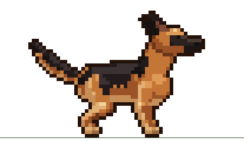
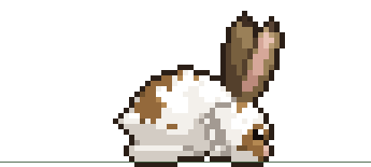
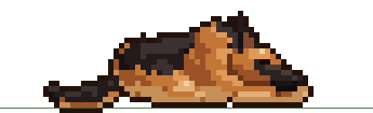
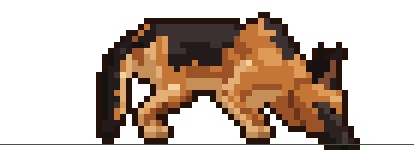
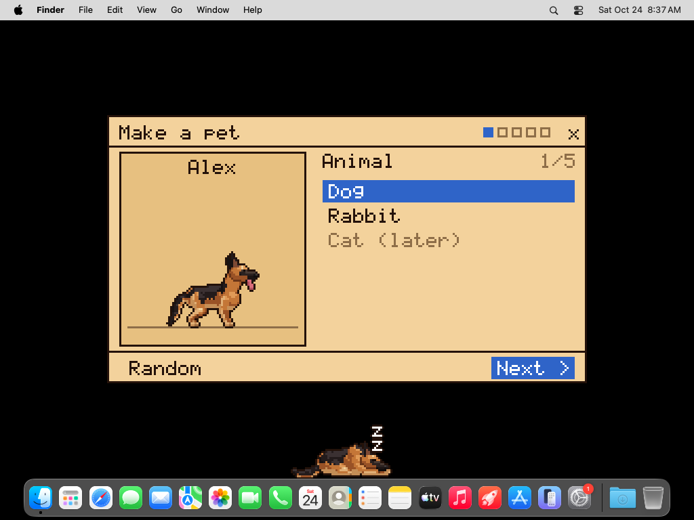
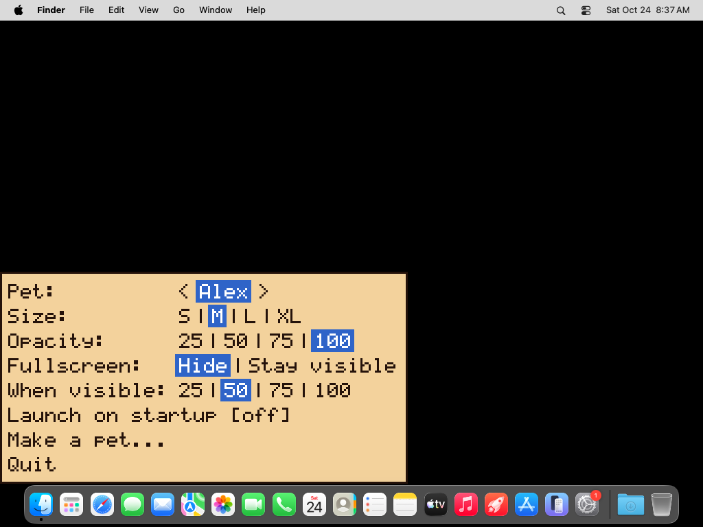
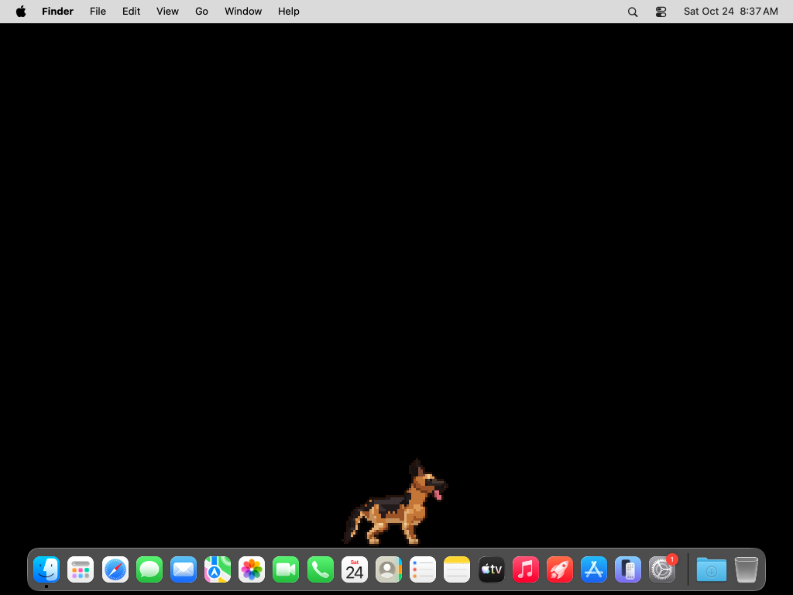
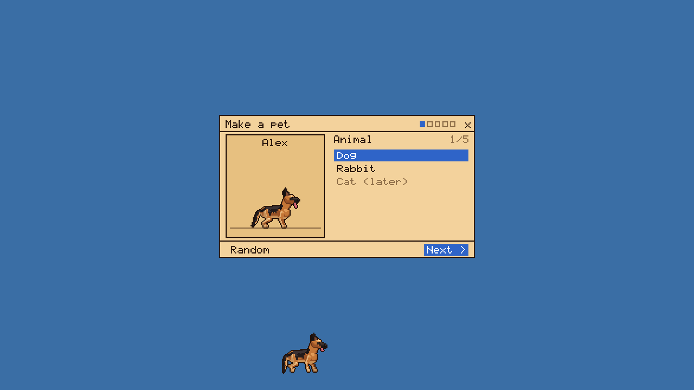

Download macOSIntel + Apple Silicon · 1.6 MB
Download LinuxAppImage · 2.5 MB
Download
Free. One file, no installer, no account. Updates itself.
Want your pet in it? Send us a photo.
See it move
What it does
Lives on your taskbar
Your pet walks along the top of the taskbar or Dock, and clicks pass straight through to whatever is behind it.

Pet, play, feed
Hover to open its bubble. Give it a pet, throw a ball, coconut or football, or hand over a treat.

Snacks
Chicken, bones and kibble for dogs. Carrots, coriander and banana for buns.

Naps
Leave it alone for a while and it curls up for a nap. Drag it anywhere, and it drops back to the ground.
Make your own
A dog, a rabbit or a cat, in five steps: breed, shape, coat, collar and a name. Two cats, Mellow and Oreo, come built in.

Stays out of the way
It hides over fullscreen video, or dims if you'd rather. You pick its size and opacity, and it can launch on startup. New versions show up in its menu, one click to update.
Screenshots




Add your pet
First launch
PixelPet isn't signed yet, so your computer asks once before running it:
- Windows: on "Windows protected your PC", click More info, then Run anyway.
- macOS: open the dmg and drag PixelPet to Applications. If it says it can't be opened, click Done, go to System Settings → Privacy & Security, and click Open Anyway.
- Linux: run chmod +x PixelPet-x86_64.AppImage, then run it. It needs X11, or Wayland with XWayland.